Stanford CS153 Frontier Systems
Scale, AGI, and the Future of Everything · Sam Altman
先看这五句
- 代币能顶百人工程队。花得起的 token 预算，就能干出过去百人顶尖工程团队才能干的事；创业能接的盘子、速度、并行度都变了。
- 规模会自己长出新东西。YC 批次网络效应、缩放定律都是例子：共识以为「够了」，往往还远没到头；人脑不擅长指数。
- ChatGPT 是用户需求倒逼出来的。API 卖不动 → 开发者拿密钥聊天 → 按 YC 原则做聊天产品 → 研究 demo 爆红 → 五天内紧急建公司与产品。
- 代码是数字世界的执行器。Codex 路线：写代码操控电脑，机器人操控物理世界；目标是把算力当「AI 研究实习生」，再升级成架构研究员。
- 卖「夜间的光」，别硬卖「电」。智能要成为公用事业，需要找对消费者听得懂的类比；对学生：去做推理栈，让廉价智能铺开。
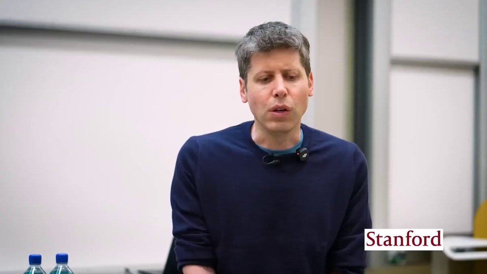
说明：推文包装 vs 实际内容
译者注：推文包装与内容不符。原帖常被写成「Sam Altman 说你不用再写提示词 / ChatGPT 隐藏用法」一类标题党。实际视频是 Stanford CS153 对话剪辑：从「可负担代币 ≈ 百人工程队」切入，到 LLM 怀疑论与身份讨论结束。本笔记按视频实际演讲/对话整理，不是提示词技巧文。
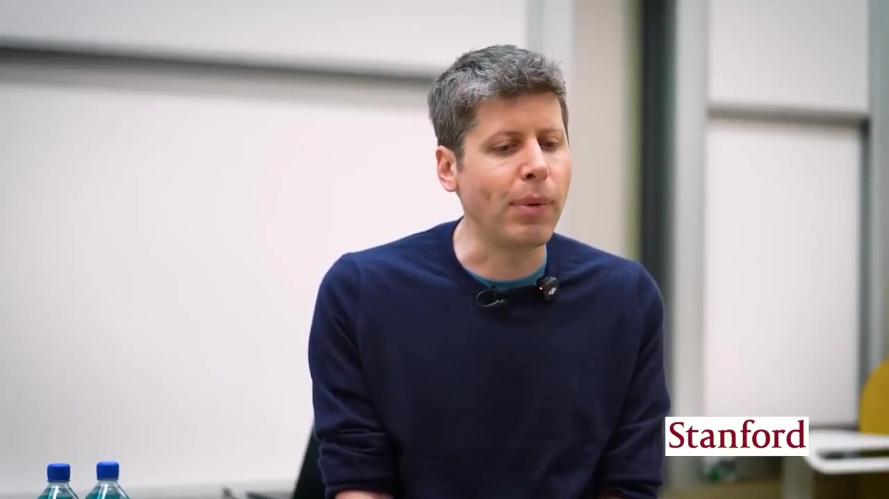
- 本片起点：对话中途——代币预算能顶百人工程队。
- 本片终点：LLM 是否死路、身份与教条（LeCun / 怀疑论相关问答）。
- 完整版约 41 分钟（Stanford Online）：后续还有教育重设计、民主化 vs 集中、UBI / 公民财富基金、算力短缺等 Q&A，本剪辑未收录。
代币 ≈ 百人工程队：创业经济学变了
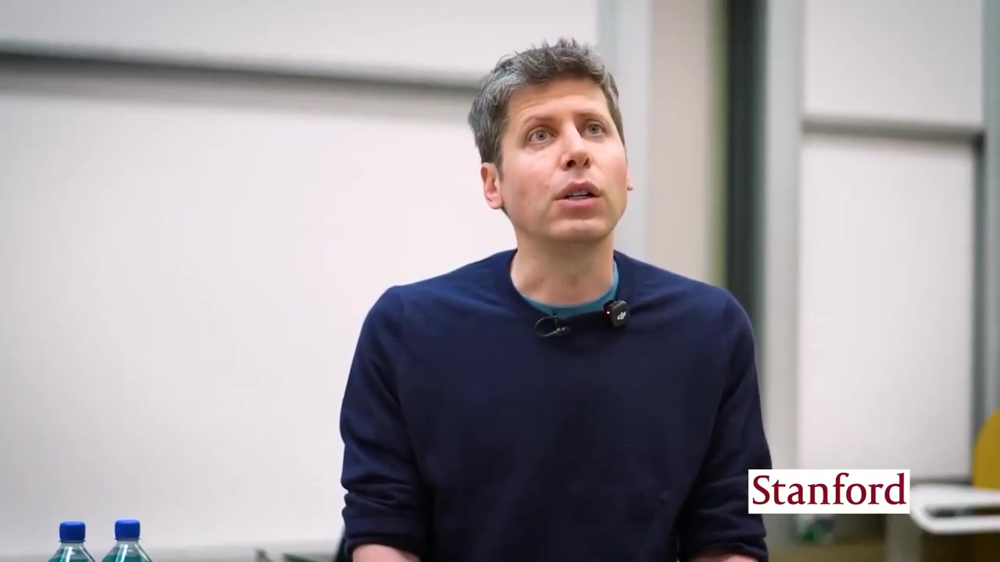
花得起的一笔代币预算，你就能干出百人级顶尖工程团队在创业公司里能干的事——这在过去根本不在可选集合里。
With like an affordable amount of spend on tokens / You can do what a hundred person / Incredibly great engineering team would do as a startup
能接的问题层级、野心、推进速度、同时并行的事情，都完全不同。主持追问：那期末作业该不该改成「分配问题让学生攻」？Altman 不买账——
- 若他能想出「显然很棒」的创业点子，多半很多人也想得到。
- OpenAI 起步时全球认真做 AGI 的团队屈指可数；要找的是那种自动化编程时代之前根本不可能、又不显然、却可能很快变成多万亿美元市场、目前只有几家在做的事。
- 他更可能不知道那是什么；学生更可能知道。别人「布置」给你的想法，大概不是你真正该追的。
规模 / Scale：涌现与指数直觉失灵
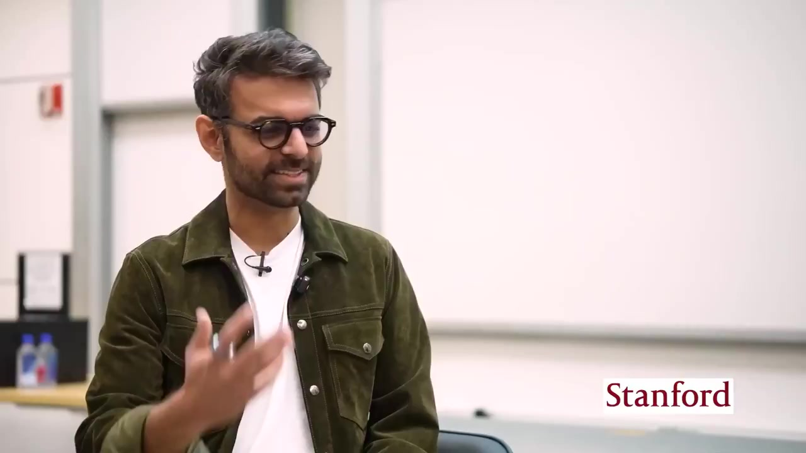
Altman 承认：他说不出一个令自己满意的理论，解释为什么「继续把已经有趣的东西推到共识以为到头的规模」常常是最有意思的事——但这是经验事实。
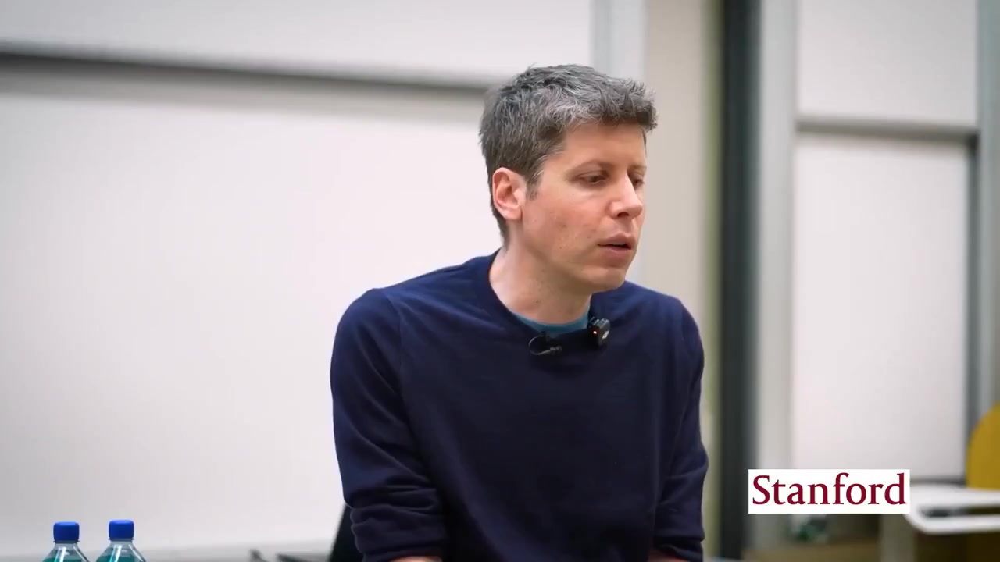
- AI 缩放定律是一例；把更多聪明人聚到一个问题上、公司的规模经济，也都是。
- YC：聪明人说「最好的公司总是显而易见的，批次大了没用」；但他看到的是，批次内网络效应是涌现属性——以前没人这样规模化投早期公司，也就撞不上这个现象。
- 方向上：找到「小规模已有趣、还能继续推」的杠杆，多半值得推；而大多数人推得不够。
系统侧为何难：规模化时东西以加速且不可预测的方式坏掉；总会有聪明人说别太野心、别太大。拆成系统问题，他举例缩放模型时要同时对付：技术上能否跨上万/十万 GPU、资本与商业风险、研究者文化（「为何不全砸一个项目，不如拆开学」）。几乎每个领域做规模，都要把「不该做」的理由逐条拆开对付。
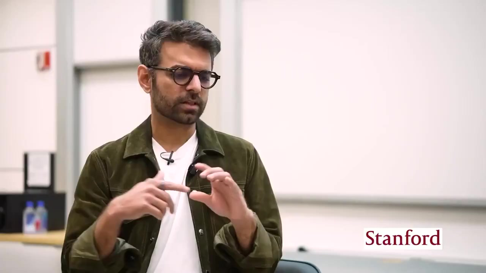
关于人：清晰目标、清晰到达计划、清晰的决策方式很重要。决定「押注缩放深度学习，错了就失败」之后，信念本身就有力量。人类没进化出好的指数直觉——缩放定律继续指数、收入指数、组织能扛指数复杂度——都要花很多时间用第一性原理跟人对齐。
ChatGPT 怎么来的：API → 聊天 → 紧急建产品
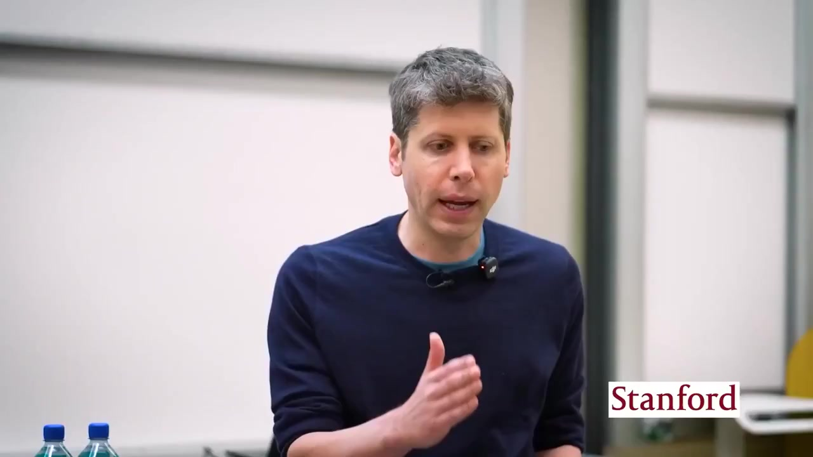
时间线（按他口述压缩）：
- GPT-3 有趣、演示酷，但产品想不出来；试过几样不行。
- 2020 夏左右上线 GPT-3 API；起初几乎没起色，约一个月后同一天几个开发者做出酷东西发到 Twitter，病毒式扩散。
- 回头看，当时模型相对兴奋度差得令人震惊；真正跑通的大生意主要是文案（copywriting），也不算特别激动人心。
- 开发者却发现：塞提示词就能聊天。很多人业务用不起来，却拿 API key 聊天。
- 按 YC 原则「看用户爱什么就做什么」：新模型（准备叫 3.5）+ 更好的指令跟随后训练 → 做聊天产品。本意是研究 demo，说服别人去做聊天类产品、再买 API。
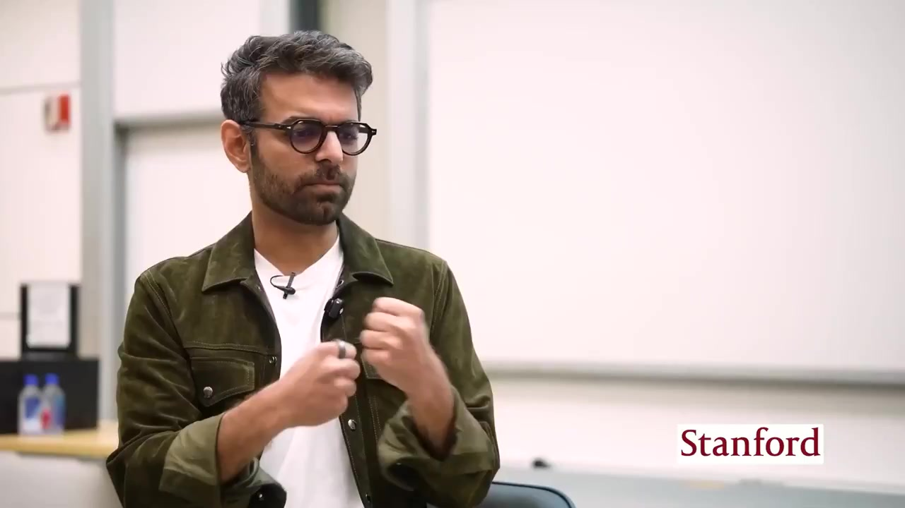
当一样东西开始疯长、而它其实还不怎么样时——你手里就是必火产品的潜质。
when something really starts growing and it's not very good / You have like a guaranteed hit on your hands
第五天召集所有人：这是好的紧急情况——必须同时建公司和产品。随后约两个月疯狂扩容；商业模式以后再说，先收费以免算力账单爆掉——结果收费也成了。大量效用其实一直在，只是用户过不了激活能。
Codex：代码作为执行器；研究实习生路线图
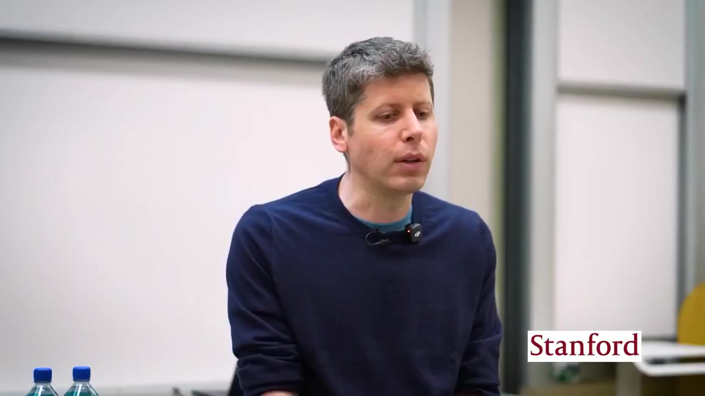
内部信念：模型够聪明 + 写代码当执行器 + 驱动机器人，智能才能在世界里真正办事。Codex 今年初已很强，大约到「5.5」出现真正拐点，人们开始用它干出惊人的事。
关于能力管线（预训练 / mid-training / 后训练 + RL 与监督反馈）：他认为这是当前管线，也预期会有一次大改写——「像流水线」略怪，未必最优；最优解交给 AI 自己去研究。
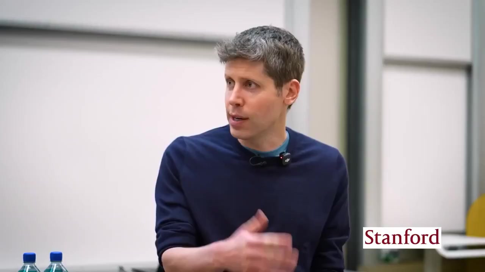
目标：今年九月，用大约五十万块 A100 等价算力当「AI 研究实习生」；到 2028 年 3 月，做出能端到端发现全新架构的顶尖研究员。
by September of this year / We will use / 500,000 a 100 equivalent GPUs ... as an AI research intern and by March of / 2028 ... very talented researcher like figuring out complete new architectures
他认为用现有管线与架构，也能跨过「AI 能干出极其惊人工作」那条线。
智能公用事业：「夜间的光」；token 层 vs 芯片层
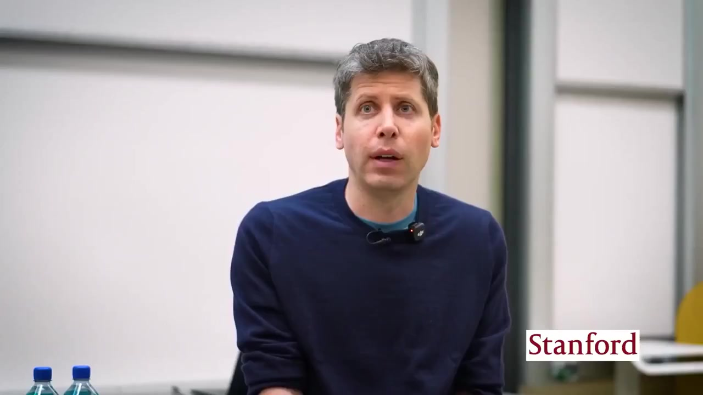
他们在创造一种新公用事业：电、互联网、水——这类东西很少，好隐喻不多。电起初很吓人（进你家、能电死人）；直接卖「电」不行。于是卖夜间的光：顺便说同一套东西以后还能洗衣……但那对用户跳太远。
即便智能真会成为每家公司、每个用户、每个政府都要接的公用事业——你有一条 OpenAI token 订阅插进一切——我也不觉得现在该硬卖「我们在卖智能」。我们还没找到自己的「夜间的光」。
I kind of don't think ... the right way for us to analogize that is we're selling intelligence ... I don't know what our equivalent of / We're selling you light at night is going to be
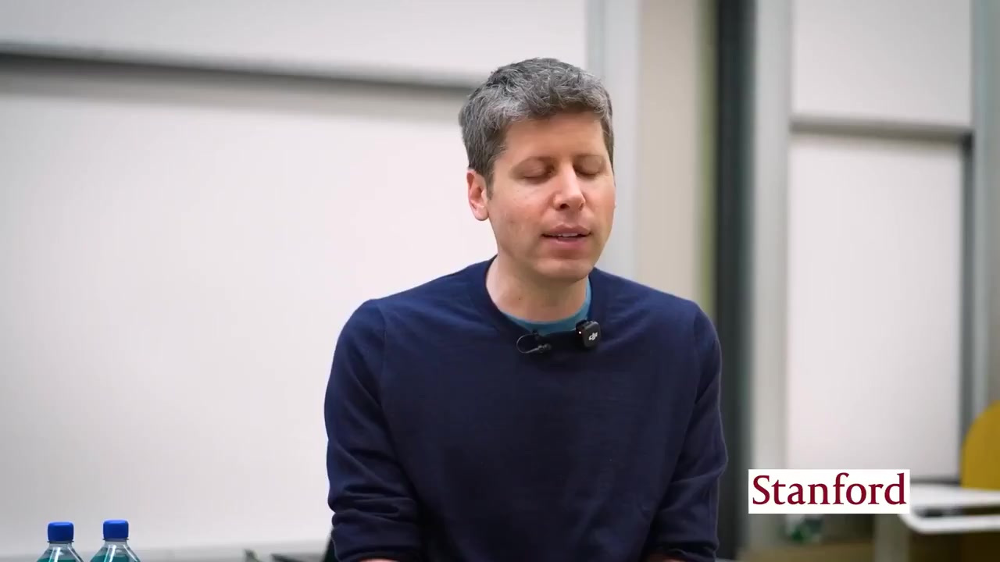
对企业和个人：你会想的是接近 token、甚至比 token 再上一层的东西——便宜吗、好用吗、能不能多用。硬件在哪、什么芯片、怎么供电，会被抽象掉。以后若是常驻 agent 一直帮你办事，计费心智可能更像「买整套系统的接入权」，就像手机账单买的是通话与流量，而不是基站硬件。
给学生的建议：做推理栈 / 一人前沿实验室
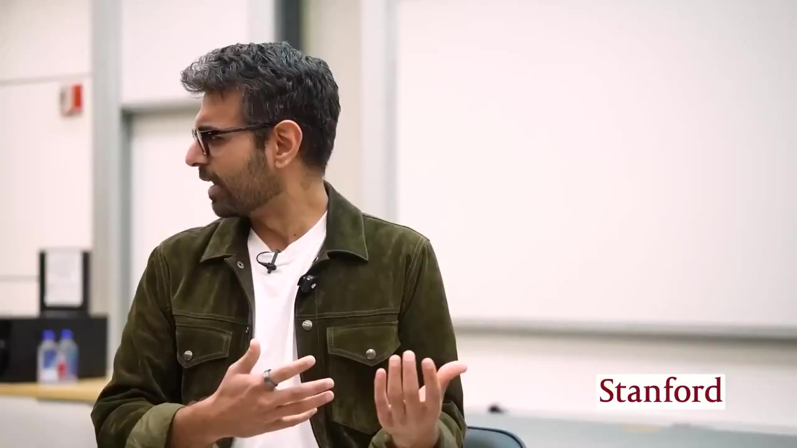
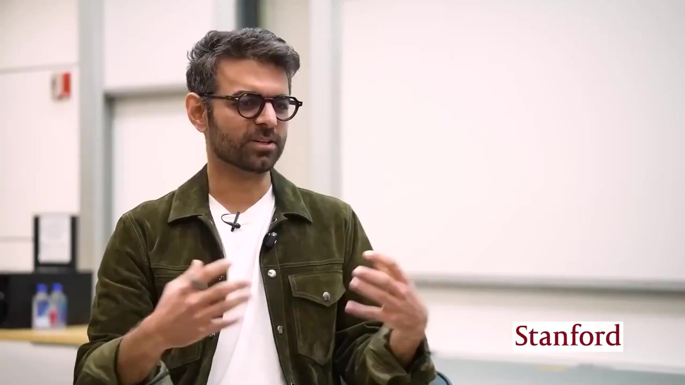
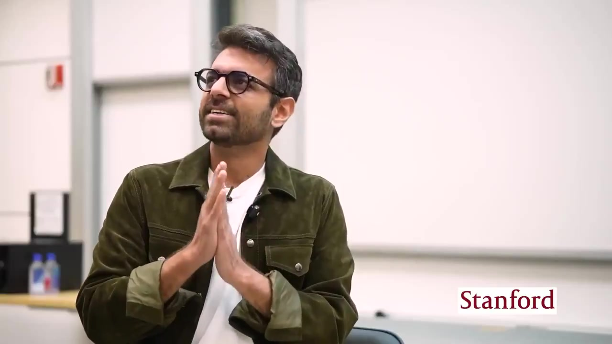
模型侧他打包票会很快变得极强；真正欠账的是：如何把惊人智能变得便宜且充裕。若他来上课，会去做推理栈那一段。主持打趣：改题或许晚了——但迟做总比不做好，做你想做的。
问答：LLM 是否死路；身份与教条
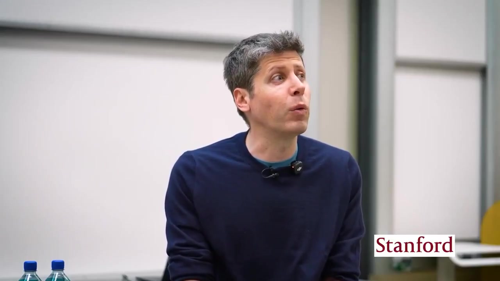
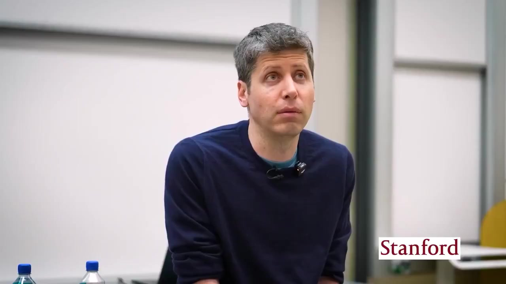
对「LLM 是死路」类观点：
- 在部分智能任务上已远超人类；在长程、高判断的任务上又远弱于人。
- 前一天某个模型证伪了一道聪明人数年攻关的 Erdős 类问题——不久前还有人说这不会发生；现在数学家在问「数学完了吗」。
- LLM 能产生新知识，能做一些人类做不到的智能任务；还会继续缩放。世界模型对机器人等很重要，但此时再赌 LLM 缩放会停，他觉得相当误导。
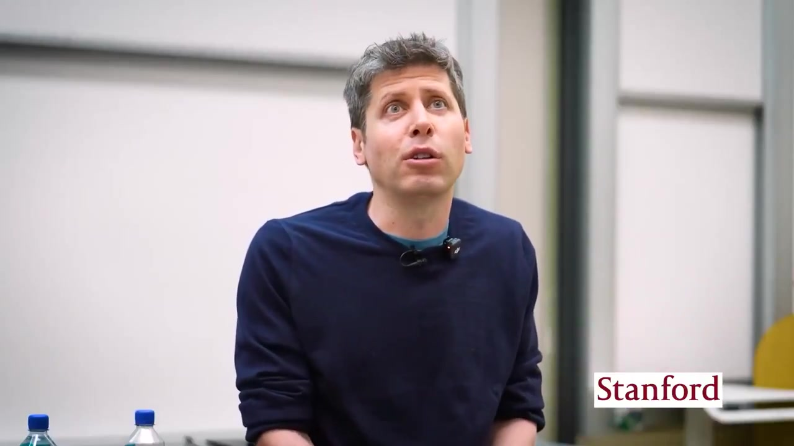
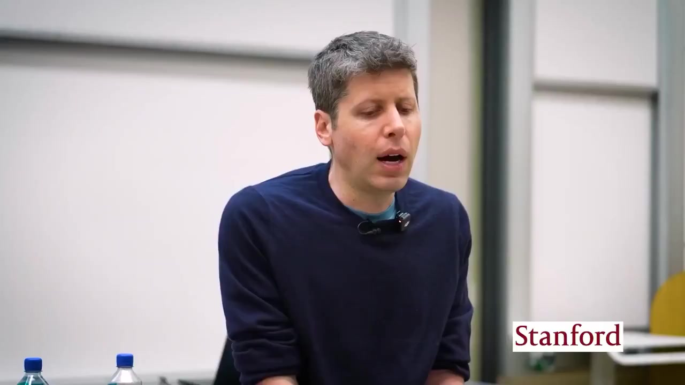
若你把身份绑在「某件事会成或不会成」上，科学或经验结果已经打脸，你却放不下身份——你就看不见真相。两边都要记住。
if you make your identity about a particular / thing is going to work or not work and / ... You're like too hung up on your identity. You can't let it go. You can't see the truth
他曾被「永远不会成功、这是骗局」的网络喷子困扰，现在连「我早就说过」的快感都没有了：对方从未真正站在数据这边，还在原地重复。领域一度被「过于确信缩放产不出什么」的一代科学家拖慢；另一些人则是看曲线还在漂亮地走，就继续推。
完整版后续（本片未收录）
以下仅作索引，不在本剪辑字幕范围内。完整版约 41 分钟：YouTube · Stanford Online。
- 教育如何重设计
- 民主化 vs 能力集中
- UBI / 公民财富基金一类分配讨论
- 算力短缺与相关经济直觉（如 Jevons）